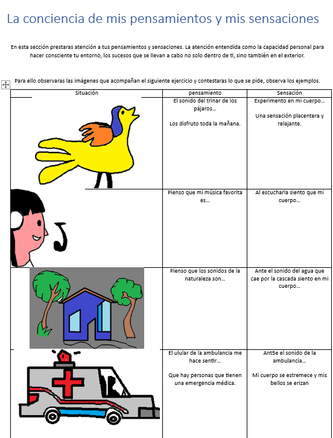

Contenido:El dinamismo de las lenguas y su evolucion como patrimonio cultural
P.D.A.
Reconoce cambios temporales y geograficos del español,la comunidad,el pais,o el mundo hispano
Evolucion de la lengua
Como todas las lenguas el español ha evolucionado desde que surgio,hace alrededor de 1000 años,hasta nuestros dias,todos esos cambios que hemos abordado han dejado su huella en la lengua y son los que han hido dando forma.No hablamos del mismo modo que lo hacian los primeros hablantes del español,como no lo hacemos de la misma que lo gacian los primeros españoles que llegaron a america ni igual que lo hacian nuestros tatara abuelos hace 125 años.El vocabulario,las expresiones o incluso algunas construcciones sin tacticas se han modificado a lo largo de los años,aunque no lo suficiente como para que no podamos entender el español de hace 500 años.
Encuentra los primeros 5 terminos de la siguiente sucesion:2n²-11n+50:
En una sala hay mesas de distintos tamaños.En la primera mesa hay una persona,en la segunda 2,en la tercera tre y asi sucesivamente.cada persona saluda una sola vez a cada integrante de su mesa,construye la sucecion del numero de saludos de cada mesa:
¿cual es la regla general de la sucecion?
¿cuantos saludos se daran en la mesa 100,150 y 500?
Representa algebraicamente areas que generan una expresion cuadratica.
Calcula el perimetro y el area de las siguientes figuras.
P=
A=
P=
A=
P=
A=
Elabora un dibujo representando tus emociones actualmente
Realizar lectura de la pagina 52-57 para que identifiquen los siguientes puntos.